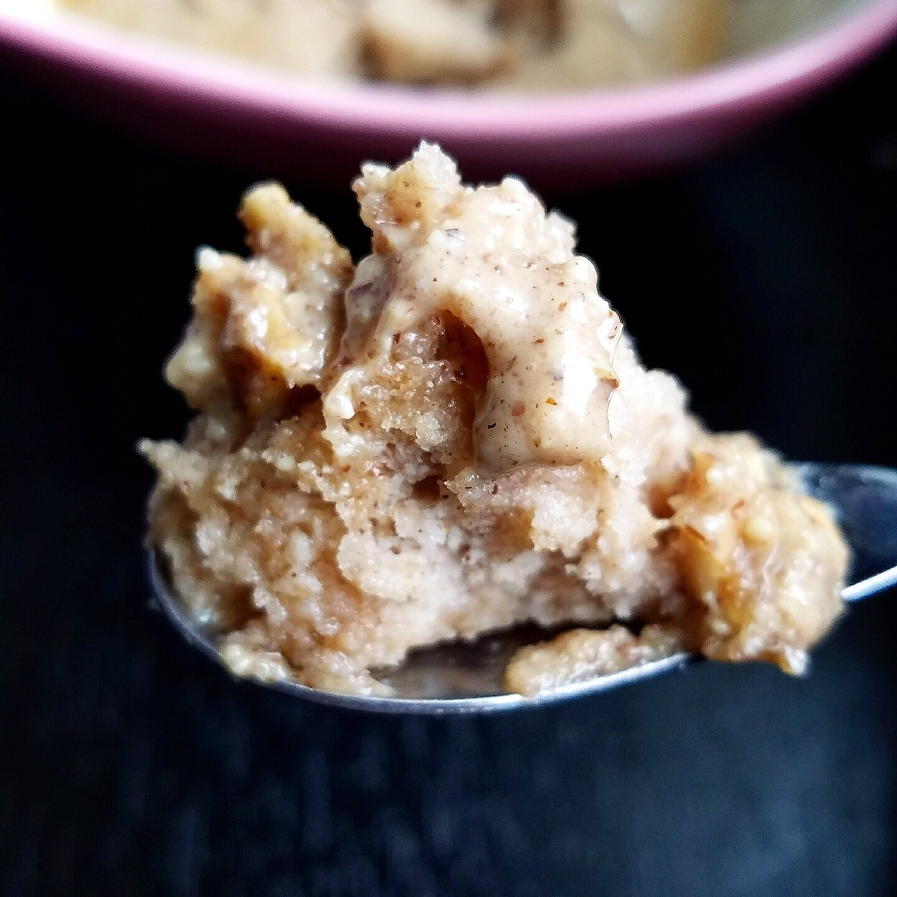

Healthy 4-Ingredient Sweet Cinnamon Mugcake (v, gf)

A healthy, 4 -ingredient sweet cinnamon mugcake to wind down the day. This recipe is vegan, gluten free, sugar free and only takes 1 minute to cook! It's a quick, healthy treat that takes little prep or effort.
It's been a while since you've heard from me, huh?! Yeah. About that. I'd like to say it's been an unconscious, slip-of-the-mind result, but the hiatus has been more or less intentional. If you follow my Youtube, you may have seen hints and sprinkles of why I've been less active on social media.
To sum it up briefly, I don't love it anymore. Do I still love cooking and food and everything delicious? Heck yeah! But social media has worn me down...so much. In particular, Instagram has gotten to me. It's so difficult to have something be a task/effort/checkmark in your day, every day, for over 5 years. Something that started as a fun "personal journal" turned into a game of numbers, comparison, and a lot of...placing expectations on myself that I THINK people have of me.
I've gotten to a place of not feeling like I can be myself. I have to delicately word things. I can't offend anyone. I have to post what people want to see or expect to see. I have to post something unique every day that the internet hasn't seen... And it's just impossible. I know half (probably more than half...) of these expectations are totally self-imposed and nobody has outright said it. But that's how I feel and it's justified. I know so many people relate. So why would I want to keep doing something that I don't enjoy?
For the longest time I wasn't sure what kept me on social media. So I just kept doing it without question. But after a long....emotional...talk with Nick, I finally realized why. I didn't want to disappoint people. I didn't want to be seen as a failure. I didn't want to let down companies. I have a huge fear of missing out if there are further opportunities in my future that I'd never experience otherwise. But Nick made a good point that... everything I've accomplished doesn't go away. It still remains. I've still worked with Vitamin Shoppe and other companies as a recipe developer, I've still been featured in Food Network Magazine, I've still been featured in Consumer Reports, I've still published a cookbook, etc etcetc. It's still there. So leaving doesn't change anything. And realizing that....brought this huge sense of peace to me.
I've felt so much better this week with the approach of ignoring Instagram, but posting what I feel compelled to and proud of. Just saying whatever I want. It's so much more relaxed. No expectations. So I think my decision is to lay low/put to the side my Instagram and Youtube for the time being to "re-group" my mind. Assess what makes me happy. And with the blog, I will continue to stay active here. I really do enjoy playing in the kitchen. I love food. You know this hahaha. So I'm thinking weekly or bi-weekly recipes will be posted. I can have my fun, but not be expected to create DAILY. I just can't be upheld to that standard. This really feels like the end of a 5-year relationship. I have to re-learn myself, find ways to spend my time, find what truly makes me happy. Because the relationship is toxic and I HAVE to let go.
WITH THAT BEING SAID. Hiii. Thanks for always reading. You have no idea how much I appreciate my friendships and relationships I've made through social media. I hope you continue reading. I made this quick, 4-ingredient sweet cinnamon mugcake this week because I wanted to try out the new Apple Pie Legendary Foods nut butter on top, and I knew it would pair perfectly!! It sure did.
This recipe is sweet, simple, and healthy! I turn to this when I'm pressed for time or just feeling extra particularly lazy (like after my 33 mile bike ride last weekend! - That reminds me of another update I have for a later post :D). Give it a try and let me know what you think!
Healthy 4-Ingredient Sweet Cinnamon Mugcake
Serves: 1
-
1/4 cup buckwheat flour
-
1/2 tsp cinnamon
-
1/2 tsp baking powder
-
1/3 cup almond milk (or water)
-
1 packet stevia (Optional)
Mix all of the ingredients in a bowl. Once even, microwave for 60 seconds! That's it!